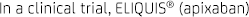
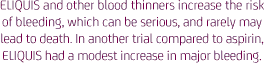
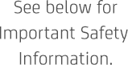
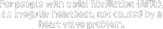

<!DOCTYPE html>
<html lang="en">
<head>
<meta charset="UTF-8">
<title>Eliquis Afib Awareness Both 300x600</title>
<meta name="viewport" content="width=device-width,initial-scale=1,maximum-scale=1" />
<link rel=StyleSheet HREF="Eliquis_Afib_Both_300x600.css" type="text/css" />
<meta http-equiv="X-UA-Compatible" content="IE=edge" />
</head>
<body>
<div id="container">

<!-- /// TOP CONTENT /// -->
<div id="content">

  <canvas id="elements" width="300" height="353"></canvas>

<div class="copyimages">
    <div id="f1txt1_f2txt1_f3txt1"></div>

    <!--Frame 2-->
    <div id="f2txt2_f3txt3_f5txt3"></div>

    <!--Frame 3-->
    <div id="f3txt2"></div>

    <!--Frame 4-->
    <div id="f4txt1"></div>

    <!--Frame 5-->
    <div id="f5txt1"></div>
    <div id="f5txt2"></div>
    <div id="txtBtn"></div>
  </div>

  <div id="header">
    <div class="headerTxt"></div>
  </div>
  <a href="#" target="_blank" rel="external">
  <!-- <div id="ctaBtn"></div> -->
  </a> 
  <!-- /// ISI /// -->
  <div id="ISI_holder">    
    <div id="scroller">
      <div class="copy">
        <p><span class="bold">For people taking ELIQUIS for atrial fibrillation: Do not stop taking ELIQUIS<sup>®</sup> &nbsp;(apixaban) without talking to the doctor who prescribed it for you. Stopping ELIQUIS increases your risk of having a stroke.</span><br />
          ELIQUIS may need to be stopped prior to surgery or a medical or dental procedure. Your doctor will tell you when you should stop taking ELIQUIS and when you may start taking it again. If you have to stop taking ELIQUIS, your doctor may prescribe another medicine to help prevent a blood clot from forming.</p>
        <p><span class="bold">ELIQUIS can cause bleeding,</span> which can be serious, and rarely may lead to death. This is because ELIQUIS is a blood thinner medicine that reduces blood clotting.</p>
        <p><span class="bold">You may have a higher risk of bleeding if you take ELIQUIS and</span> take other medicines that increase your risk of bleeding, such as aspirin, nonsteroidal anti-inflammatory drugs (called NSAIDs), warfarin (COUMADIN<sup>®</sup> &nbsp;), heparin, selective serotonin reuptake inhibitors (SSRIs) or serotonin norepinephrine reuptake inhibitors (SNRIs), and other medicines to help prevent or treat blood clots. <span class="bold">Tell your doctor about all of the medicines you take,</span> including any over-the-counter medicines, vitamins, and herbal supplements.</p>
        <p>While taking ELIQUIS, you may bruise more easily and it may take longer than usual for any bleeding to stop.</p>
        <p class="bold">Call your doctor or get medical help right away if you have any of these signs or symptoms of bleeding when taking ELIQUIS:</p>
        <ul>
          <li>unexpected bleeding or bleeding that lasts a long time, such as unusual bleeding from the gums, nosebleeds that happen often, or menstrual or vaginal bleeding that is heavier than normal</li>
          <li>bleeding that is severe or you cannot control</li>
          <li>red, pink, or brown urine; red or black stools (looks like tar)</li>
          <li>oughing up or vomiting blood or vomit that looks like coffee grounds</li>
          <li>unexpected pain, swelling, or joint pain</li>
          <li>headaches, or feeling dizzy or weak</li>
        </ul>
        <p class="bold">ELIQUIS (apixaban) is not for patients with artificial heart valves.</p>
        <p><span class="bold">Spinal or epidural blood clots (hematoma).</span> People who take ELIQUIS, and have medicine injected into their spinal and epidural area, or have a spinal puncture have a risk of forming a blood clot that can cause long-term or permanent loss of the ability to move (paralysis). Your risk of developing a spinal or epidural blood clot is higher if:</p>
        <ul>
          <li>a thin tube called an epidural catheter is placed inyour back to give you certain medicine</li>
          <li>you take NSAIDs or a medicine to prevent blood from clotting</li>
          <li>you have a history of difficult or repeated epidural or spinal punctures</li>
          <li>you have a history of problems with your spine or have hadsurgery on your spine</li>
        </ul>
        <p>If you take ELIQUIS and receive spinal anesthesia or have a spinal puncture, your doctor should watch you closely for symptoms of spinal or epidural blood clots or bleeding. Tell your doctor right away if you have tingling, numbness, or muscle weakness, especially in your legs and feet.</p>
        <p><span class="bold">Do not take ELIQUIS if you</span> currently have certain types of abnormal bleeding or have had a serious allergic reaction to ELIQUIS.</p>
        <p><span class="bold">Before you take ELIQUIS,</span> tell your doctor if you have kidney or liver problems, have any other medical condition, or have ever had bleeding problems. Tell your doctor if you are pregnant or breastfeeding, or plan to become pregnant or breastfeed. You and your doctor should decide if you will take ELIQUIS<sup>®</sup> &nbsp;(apixaban) or breastfeed. You should not do both.</p>
        <p><span class="bold">Take ELIQUIS exactly as prescribed by your doctor.</span> Take ELIQUIS twice every day with or without food, and do not change your dose or stop taking it unless your doctor tells you to. If you miss a dose of ELIQUIS, take it as soon as you remember, and do not take more than one dose at the same time. <span class="bold">If you are taking ELIQUIS for atrial fibrillation, stopping ELIQUIS may increase your risk of having a stroke.</span>
        <p><span class="bold">ELIQUIS may increase your risk of having a stroke. Do not run out of ELIQUIS. Refill your prescription before you run out.</span> When leaving the hospital following hip or knee replacement, be sure that you will have ELIQUIS available to avoid missing any doses.</p>
        <p><span class="bold">Possible serious side effects include bleeding or a reaction to ELIQUIS itself.</span> A reaction to ELIQUIS can cause hives, rash, itching, and possibly trouble breathing. If you get this reaction, it will usually happen soon after you take a dose of ELIQUIS. Get medical help right away if you have sudden chest pain or chest tightness, have sudden swelling of your face or tongue, have trouble breathing, wheezing, or feeling dizzy or faint.</p>
        <p><span class="bold">INDICATION</span><br />
          ELIQUIS is a prescription medicine used to reduce the risk of stroke and blood clots in people who have atrial fibrillation, a type of irregular heartbeat, not caused by a heart valve problem.</p>
        <p>Please see U.S. <a href="#" target="_blank">Full Prescribing Information</a>, including <b>Boxed WARNING</b> and <a href="#" target="_blank">Medication Guide</a>.</p>
        <p>ELIQUIS<sup>®</sup> &nbsp;and the ELIQUIS logo are trademarks of the Bristol-Myers Squibb Company.</p>
        <p>COUMADIN<sup>®</sup> &nbsp;is a registered trademark of Bristol-Myers Squibb Pharma Company.</p>
        
        <p>© 2015 Bristol-Myers Squibb Company.<br />
          432US15BR00321-01-01  04/15</p>
      </div>
      <!--copy--> 
    </div>
    <!--scroller-->
    <div id="expandCollapse"><a href="#"></a></div>
    <div class="ISI_header">IMPORTANT SAFETY INFORMATION &<br />
      INDICATION</div>
    <div id="separation"></div>
  </div>
  <!-- /// Footer /// -->
  <div id="footer">
    <div id="footerTxt"><a href="#" ></a></div>
  </div>
  <!--Footer-->
  <div id="loader">
    <div class="loading">Loading...</div>
  </div>
</div>
<!--container--> 

<script src="http://s0.2mdn.net/ads/studio/Enabler.js" type="text/javascript"></script> 
<script src="miniscroll_dh.min.js" type="text/javascript"></script> 
<script src="easeljs-0.8.0.min.js" type="text/javascript"></script> 
<script src="tweenjs-0.6.0.min.js" type="text/javascript"></script> 
<script src="assets.js" type="text/javascript"></script>
<script src="Eliquis_Afib_Both_300x600.js" type="text/javascript"></script>
</body>
</html>
